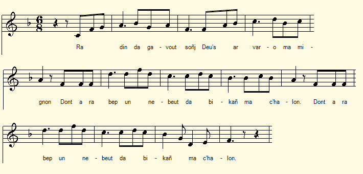
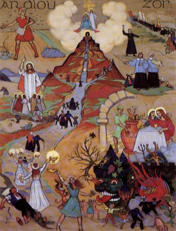

1° Gwerzenn ar Marv
Memento mori
Chant collecté par Théodore Hersart de La Villemarquédans le 2ème Carnet de Keransquer (p.111).

Mélodie
"Deredit holl an taolennoù"
Source: Air tiré de "Cantiques Bretons du Diocèse de Léon" de J. Le Marrec, Quimper , Mai 1964
N° 24 "Deredit holl an taolennoù" ou "Air allemand".
Arrangement: repris de "Kantikoù brezonek Eskopti Kemper ha Leon" de Jean Guillou recteur de Penmarc'h
http://bibliotheque.idbe-bzh.org/data/cle_76/Cantiques_Bretons_du_DiocAse_de_Quimper_.pdf
|
A propos de la mélodie Inconnue. Cet air choisi N°24 dans le recueil cité ci-dessus accompagne un cantique sur les tableaux de mission. A propos du texte Comme on l'a dit à propos du chant précédent, la page 111 commence par 6 vers (3 distiques) d'un chant sans rapport avec les précédents, une méditation sur la mort en lien avec les "taolennoù", ces tableaux de mission imaginés à partir de 1608 par Michel Le Nobletz (1577-1652) et également utilisés par son successeur, le bienheureux Julien Maunoir (1606-1683). Cependant le cantique du recueil se compose quatrains d'octosyllabes. |
About the tune Unknown. This air N ° 24 titled "Diredit holl an taolennoù" in the above collection accompanies a hymn about the so-called "Taolennoù" (Mission pictures). About the lyrics As stated in the comments to the foregoing song, page 111 begins with 6 lines (3 stanzas) of a song evidently unrelated to the previous ones, a meditation on death in connection with the "taolennoù", the large pictures imagined in 1608 by Michel Le Nobletz (1577-1652) and also used by his successor, the blessed Julien Maunoir (1606-1683) to teach the faithful attending their missions in Lower Brittany . However the hymn of the collection consists of quatrains of octosyllables. |

Une taolenn moderne par Xavier de Langlais (1906-1975)
|
BREZHONEG (Stumm KLT) Pajenn 111 / 59 GWERZENN AR MARV 1. Ra din da gavout soñj d'eus ar varv ma mignon Dont ra bep un nebeut da bikañ ma c'halon - 2. E-barzh an taolennoù me wel skeudenn (haden) e vez Vel an delioù per-broñs zo kouet dindan ar gwez. 3. A zo skeud d'eus e gorf er vered douaret Hag an eskernigoù krignet gant ar preñved . KLT gant Christian Souchon (c) 2020 |
FRANCAIS Page 111 / 59 MEMENTO MORI 1. Cela me fait songer à la mort, mon ami, Et chaque fois mon coeur un peu plus est meurtri. 2. Au tableau de mission se profile sa tombe Et comme les bourgeons parfois sous l'arbre tombent, 3. C'est l'ombre de son corps qui repose enterré, Des viscères aussi que les vers ont rongés. Traduction Christian Souchon (c) 2020 |
ENGLISH Page 111 / 59 MEMENTO MORI 1. It makes me think of death, my friend, And each time my heart a little more is bruised. 2. Its sees its tomb in the picture And as the buds sometimes fall under the tree, 3. It is the shadow of its body that lies buried, Of viscera that the worms are gnawing away. |
2° Kanenn an Taolennoù
Tableaux de missions
The Mission Tables
Tiré de "Cantiques Bretons du Diocèse de Léon"de J. Le Marrec, Quimper , Mai 1964, N° 24
|
BREZHONEG (Stumm KLT) DISKAN Sellit pizh ouzh (Deredit holl d') an taolennoù Zo melezour an eneoù Hag a lavar da bep hini Ar wirionez hep damantiñ. 1. Daou hent a zo, daou hent hepken Emaint digor dirak hep den Hent an ifern ha hent an neñv Hent ar marv, hent ar vuhez. 2. Hent an ifern frank ha ledan Dre ar pec'hed a gas d'an tan Darempredet eo bet atav Gant kalz a dud, siwazh dezho! KLT gant Christian Souchon (c) 2020 |
FRANCAIS REFRAIN Ce sont de vrais miroirs des âmes: Ces tableaux contemplez-les bien! Sans ménagement ils proclament La vérité, frères humains! 1. Dès notre naissance dévient Deux routes: tel est notre sort: Celle du ciel et de la vie; Celle de l'enfer et la mort. 2. Libre et large est celle qui mène Au feu d'enfer par le péché. De tout temps les foules humaines Pour leur mal'heur y ont marché! Traduction Christian Souchon (c) 2020 |
ENGLISH CHORUS Trustworthy mirrors of your souls: Are these tables. Behold closely! To every of us they proclaim Truth with utmost sincerity! 1. Two paths, aye two paths only Open in front of every man: Path to heaven and path to hell; Path to death and path to life. 2. Free and broad is the path to hell Which leads through sin to the fire From the beginning it was crowded By misled, unfortunate humans! |